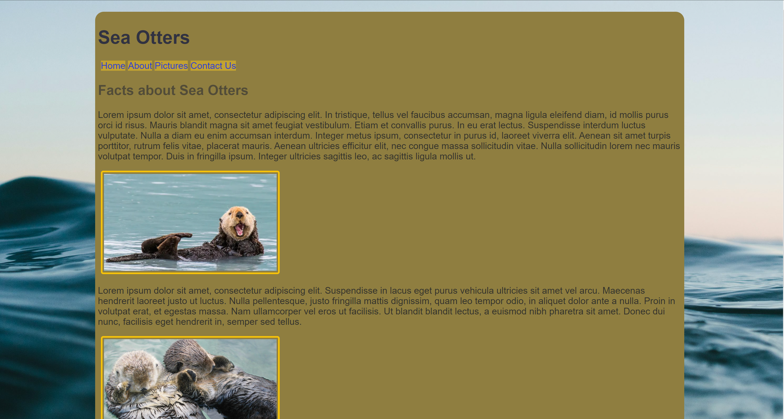
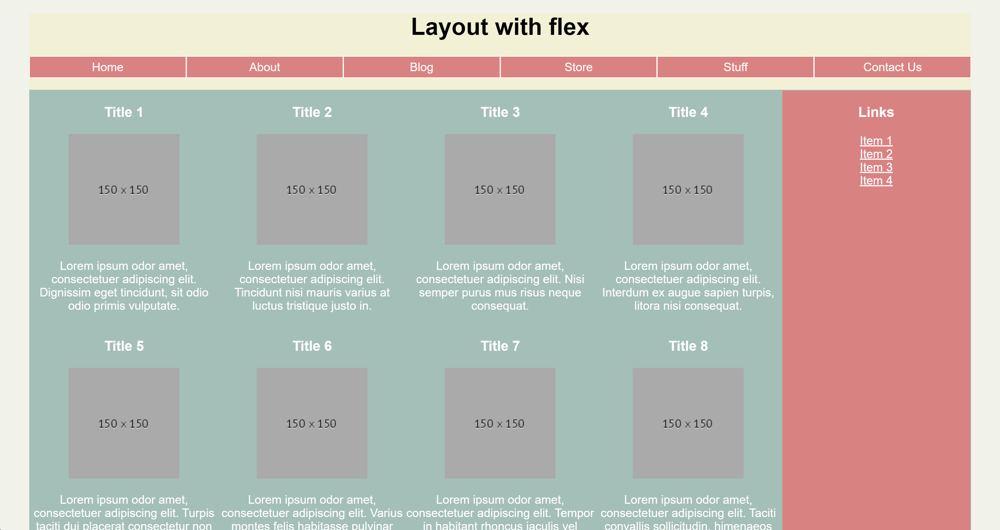
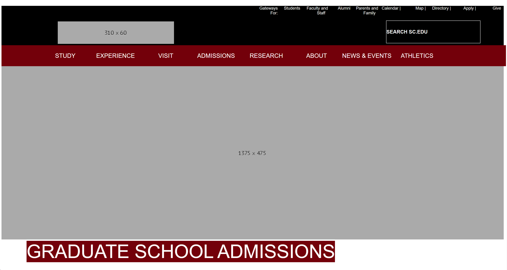
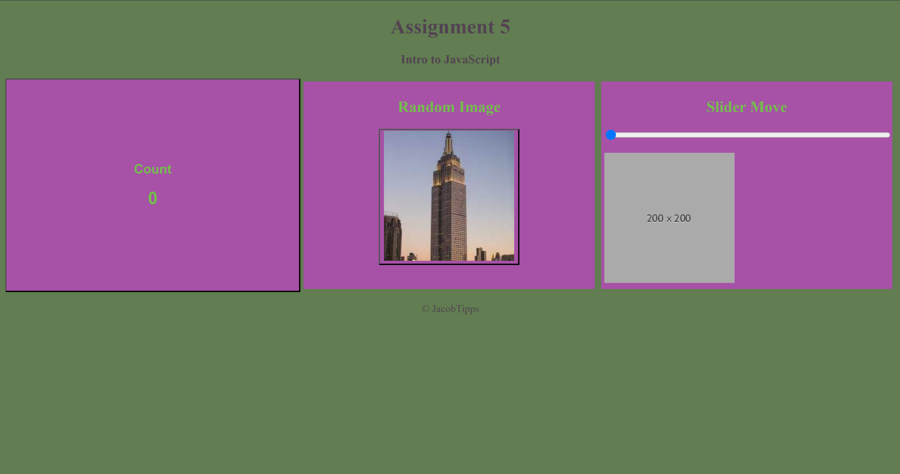
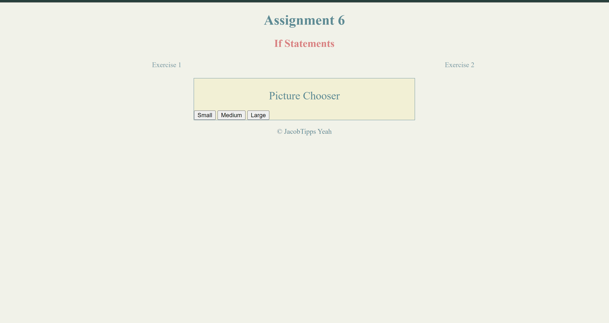
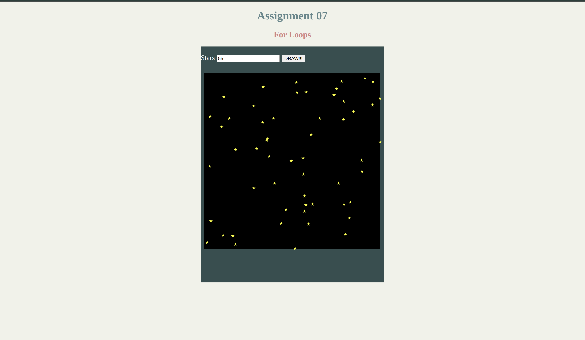
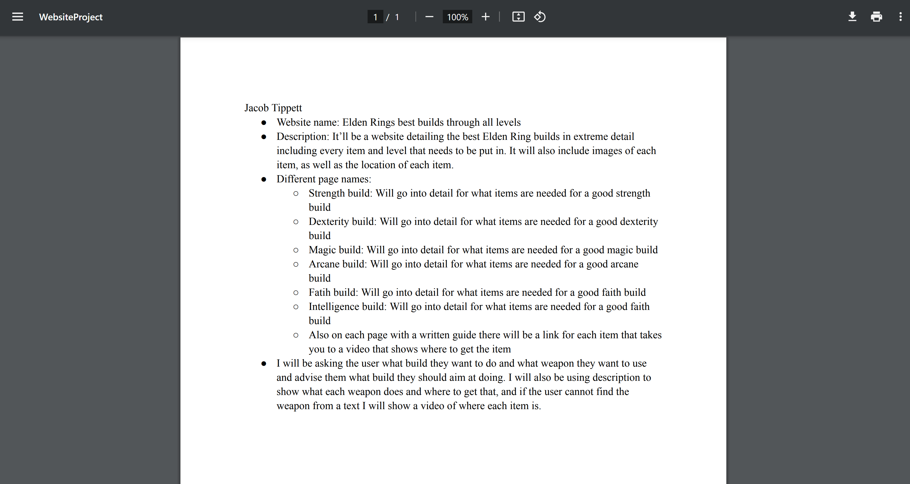
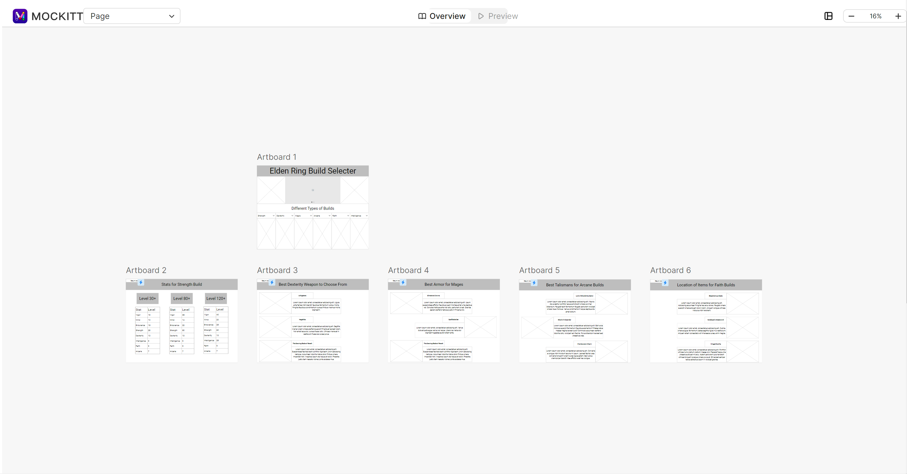
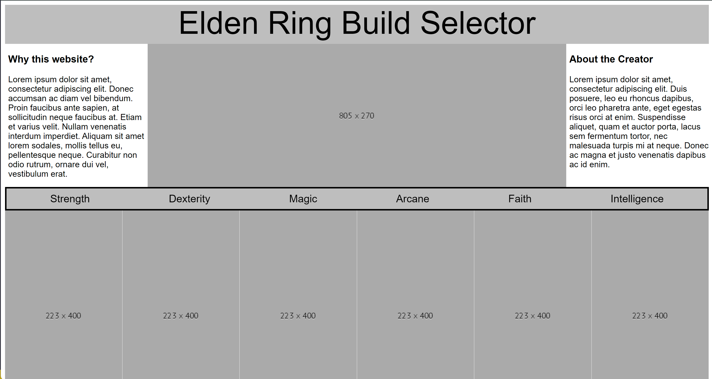
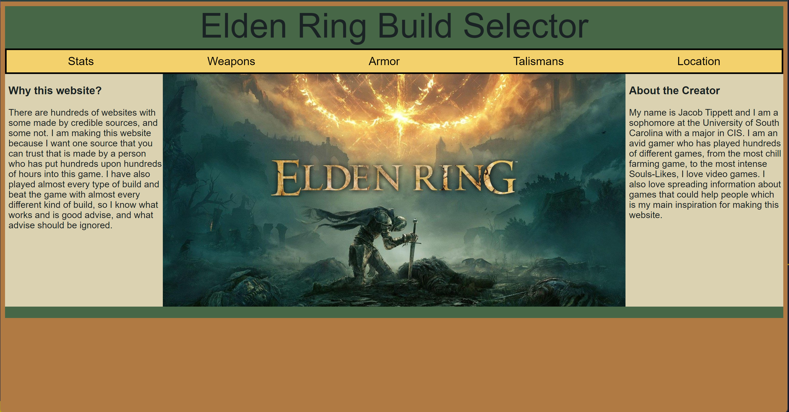

Jacob Tippett
Web Applications or CSCE 242
Web Technologies to support client-side computing. Implementation of client-side applications. Commonly uses JavaScript, HTML, and CSS.
Assingments
Make a webpage of our own design and incorporate what was taught in class.

Make a webpage of our own design, while also using stylesheet to make it look more appealing.

Make a webpage using felx box to make the website look better on mobile and desktop at the same time.

Recreate a webpage using everthing that has been taught about CSS and HTML

Work on basic JavaScript and make a website using very basic Scripts

Make two exercises that both heavily utalize If statments

Make a website that uses "For" loops to print stars in a defined area
Projects

Create a PDF with the design and rough idea of what you want you webpage to be

Create a Wireframe of the project that you are going to be doing through out the semester

Make your Wireframe in Html and Css to establish a simple baseline.

Make your prject from part 4 more appealing by adding images and colors